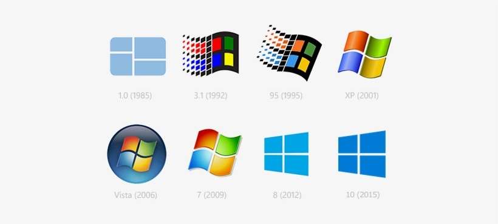

Windows
Microsoft Windows is a family of proprietary operating systems designed by Microsoft Corporation and primarily targeted to
Intel architecture based computers, with an estimated 88.9 percent total usage share on Web connected computers.
The latest version is Windows 11.
In 2011, Windows 7 overtook Windows XP as most common version in use.
Microsoft Windows was first released in 1985, as an operating environment running on top of MS-DOS, which was the standard
operating system shipped on most Intel architecture personal computers at the time. In 1995, Windows 95 was released which
only used MS-DOS as a bootstrap. For backwards compatibility, Win9x could run real-mode MS-DOS and 16-bit
Windows 3.x drivers. Windows ME, released in 2000, was the last version in the Win9x family. Later versions have all
been based on the Windows NT kernel. Current client versions of Windows run on IA-32, x86-64 and ARM microprocessors.
In addition Itanium is still supported in older server version Windows Server 2008 R2. In the past, Windows NT supported additional architectures.

Server editions of Windows are widely used. In recent years, Microsoft has expended significant capital in an effort to promote
the use of Windows as a server operating system. However, Windows' usage on servers is not as widespread as on personal computers
as Windows competes against Linux and BSD for server market share.